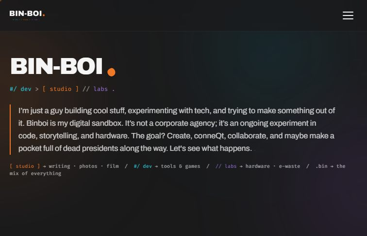
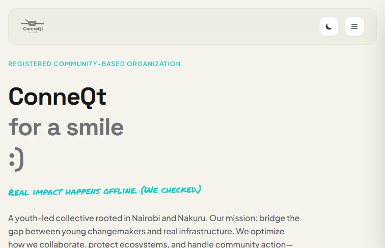
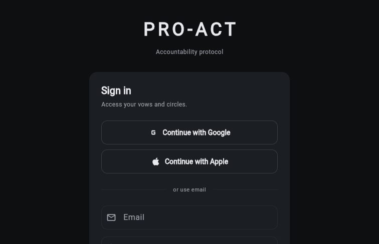
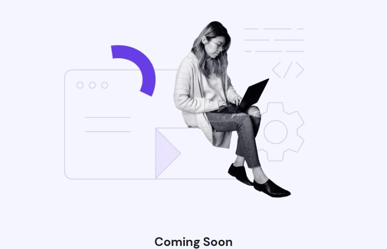

Projects
The deep dives live on Binboi. This is the map — the products, studios, and community work I’m building across.
01 / Ventures
Founding & governance-
Founder & Lead Tinkerer
Binboi Studios
My digital sandbox for code, storytelling, and hardware. Not an agency — an ongoing experiment where everything I build, break, and learn gets made into something: tools, games, poems, film, and e-waste mods.

binboi.biz — homepage -
Co-founder
Carlteq
A Nairobi-based creative technology studio crafting bold brand identities, high-performing websites, digital marketing, and event experiences.
-
Board member
ConneQt
A youth-led community-based organization across Nairobi and Nakuru, working on livelihood, wellbeing, and environmental stewardship. The team turned a paper drive into 3.2 tonnes recycled and KES 64,800 for community projects.

conneqtke.org — homepage
02 / Products & builds
Things that run-
01 — Live
Pro-Act
A gamified accountability app built with Flutter and Supabase. Authentication, encrypted data, and interactive vows instead of another boring spreadsheet.

proact.dev.binboi.biz — app page -
02 — In development
Terminal Mystery Game
A two-player mystery. Each person opens a stylised terminal on their phone, gets a different set of character files, and works together to solve a murder in a noir harbour city.
-
03 — Public platforms
Civic Tech & NGOs
Web systems for non-profits, including suso.world and Bonganagava — built for communication, fundraising tracking, and public transparency.

suso.world — homepage
03 / Studio & words
Created out loud-
01 — Writing
Poems & field notes
Short poems, fragments, and notes from the studio floor — the writing side of the same brain that builds the apps. Lives in Binboi’s verse log.
-
02 — Content
2broke.2bike
Two guys exploring on skateboards and helmets, documenting the hustle until they can afford real bikes. A Binboi Studios content project.
Photos, reels, and work-in-progress also live in the Binboi studio wing.